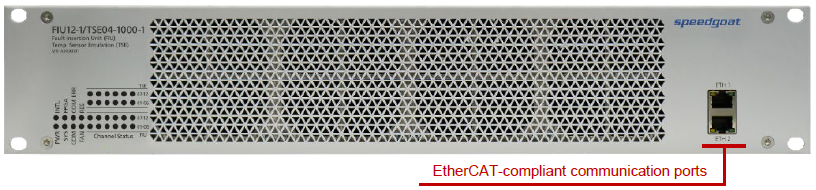
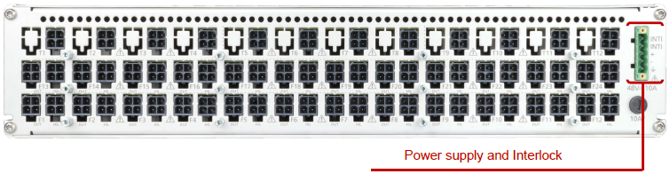
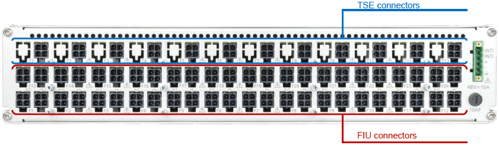
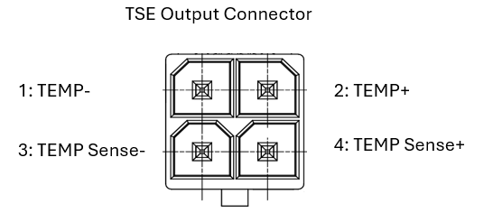

TSE Pin Mapping
TSE Pin Mapping — Reference information about the I/O module connectors
Communication

| Port | Description |
|---|---|
| ETH1 | EtherCAT in: connect to the target machine or the previous device of the chain |
| ETH2 | EtherCAT out: connect to the next device of the chain |
Power Supply and Interlock


| Pin | Description |
|---|---|
| 1 | Interlock: connect, e.g., to a rack door switch |
| 2 | Interlock: connect, e.g., to a rack door switch |
| 3 | 48 V+: connect to power supply unit |
| 4 | 48 V-: connect to power supply unit |
| 5 | Earth Terminal: must be connected to the protective earth (PE) |
TSE Connectors


| Pin | Description |
|---|---|
| 1 | TEMP-: Negative temperature sensor output pin. Connect to the BMS. |
| 2 | TEMP+: Positive temperature sensor output pin. Connect to the BMS. |
| 3 | TEMP Sense-: Negative temperature sensor output pin for the sensing line. Connect to the BMS. |
| 4 | TEMP Sense+: Positive temperature sensor output pin for the sensing line. Connect to the BMS. |